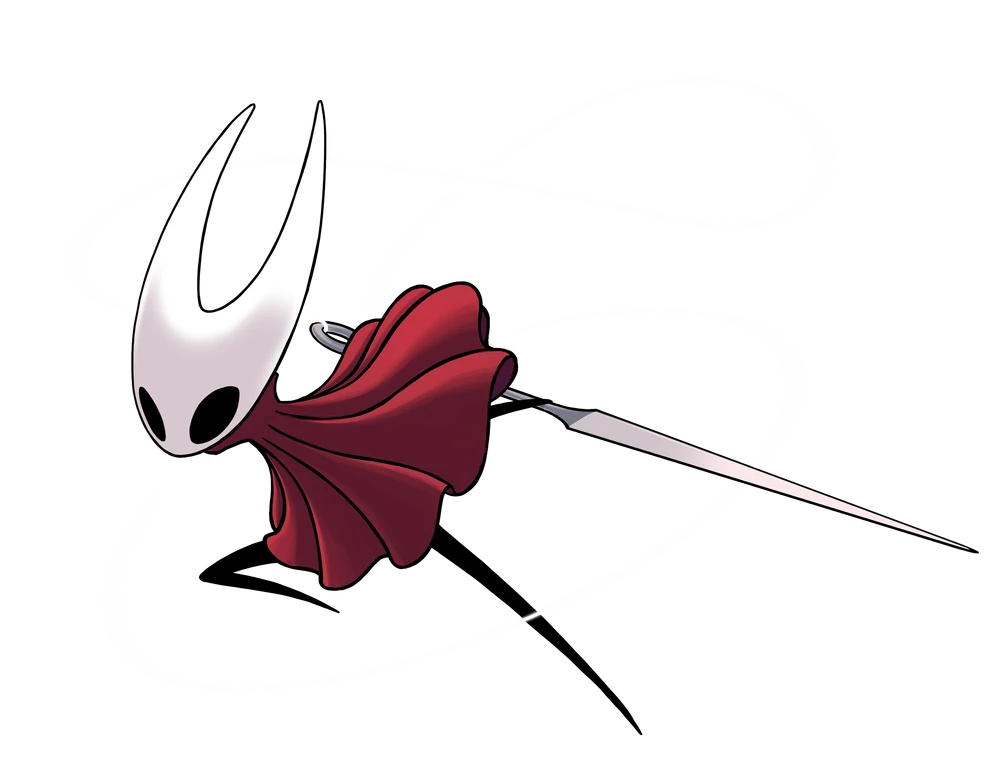

Таланты ткачей
- Шёлковое копьё
- Бросок иглы вперёд, прошивающий врагов насквозь
- Буйство Нитей
- Окутывание нитями, пронзающими врагов вокруг
- Поперечный стежок
- Парирование ударов врагов и смертоносная контратака
- Острожал
- Рывок вперёд, несущий сквозь любых врагов
- Ярость рун
- Призыв рун, разрывающих врагов, где бы они ни были
- Светлые коготки
- Когти, которые ищут врагов и устремляются к ним
Знаки шёлка
| Вид | Название | Ячейки | Способность | |||
|---|---|---|---|---|---|---|
|  | Охотница | 1 | 2 | 2 | 2 | Увеличение урона последовательных атак |
|  | Жнец | 1 | 2 | 2 | 2 | Высекание дополнительного шёлка |
|  | Странница | 1 | 1 | 2 | 3 | Шквал быстрых ударов |
|  | Зверь | 1 | 2 | 0 | 2 | Ярость, похищающая здоровье врагов |
|  | Архитектор | 0 | 3 | 2 | 2 | Создание новых инструментов налету |
|  | Ведьма | 1 | 2 | 3 | 0 | Шюпальца паразита опутывают ваших врагов |
|  | Шаманка | 3 | 0 | 2 | 0 | Шюпальца паразита опутывают ваших врагов |